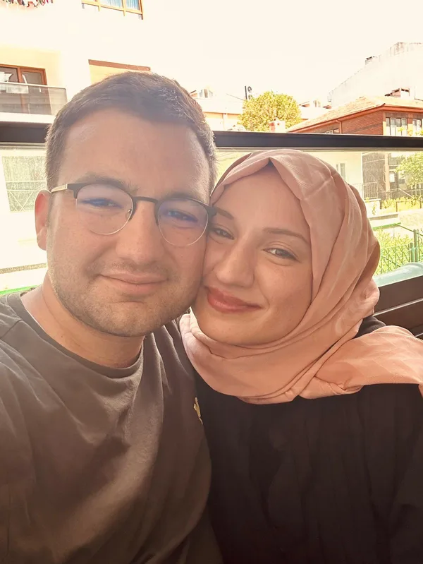
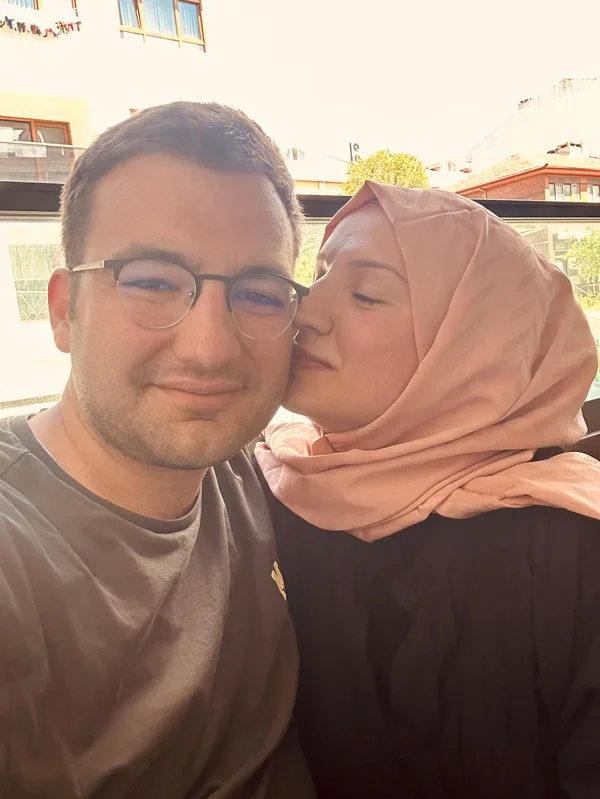
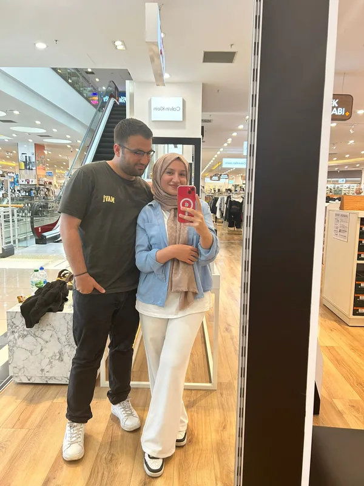
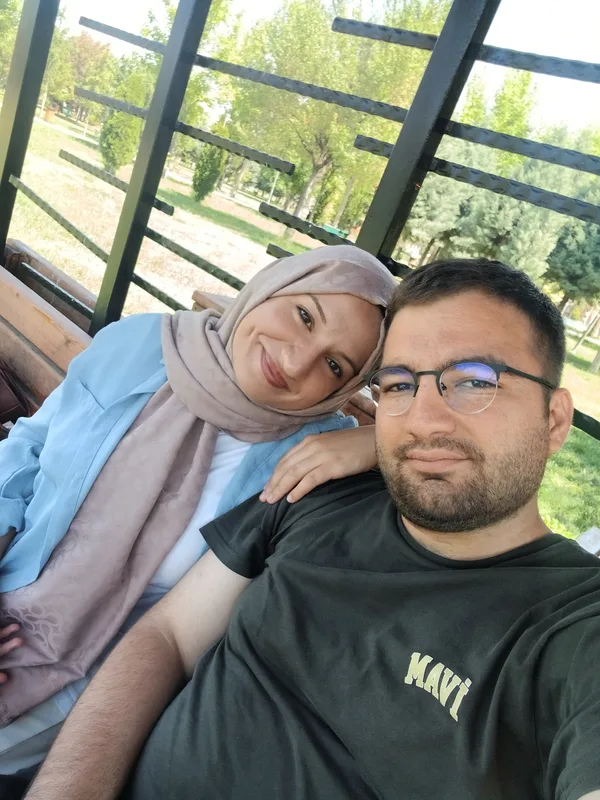
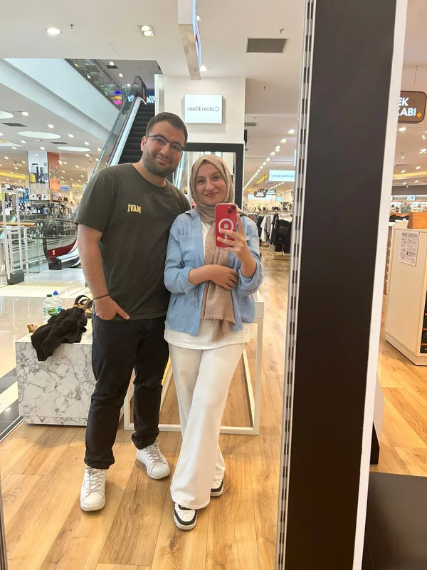
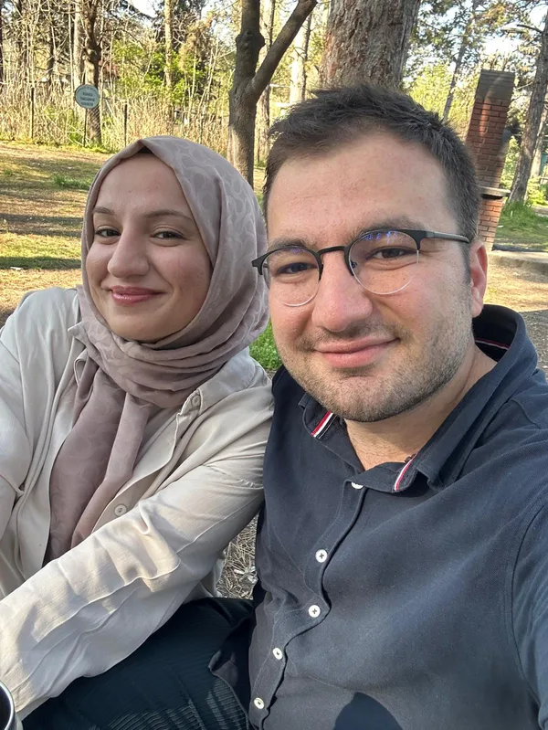
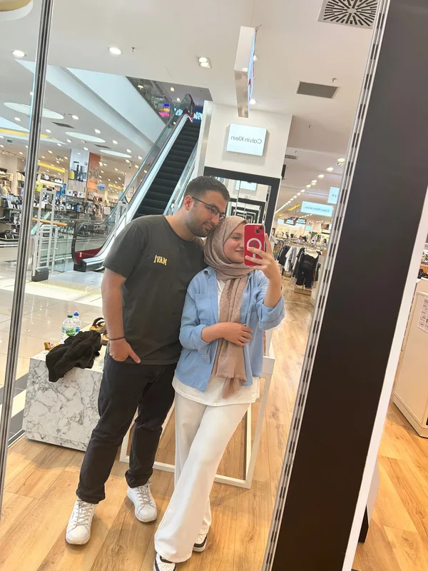

Dört Ayın Zarafeti
Zaman su gibi akıp giderken geriye sadece güzellikler bırakıyor. Birlikte geçirdiğimiz 120 gün, hayatımın en dingin, en mutlu ve en anlamlı dönemi oldu.
Bu özel sayfaya erişmek için şifreyi gir sevgilim... ❤️
4. Ay
SEVGİLİ EBRU'YA · DÖRDÜNCÜ AY
Dört mevsim gibi güzelsin,
her anında ayrı bir bahar saklı...
KÖK SALAN AŞKIMIZ

Dördüncü ayımızda sevgimiz bir çınar gibi kök saldı sevgilim. Seninle geçen her gün, hayatımın en değerli armağanı. Yanındayken dünyanın tüm telaşı bitiyor, geriye sadece gözlerindeki o huzur dolu sonsuzluk kalıyor.
Gülüşünle aydınlanan dünyamda sana olan sevgim sonsuz.
Sen benim dört mevsim süren en güzel baharımsın.
24 EYLÜL - 24 EKİM 2026
Tamamlandı · 120 Gün
Bölüm I
120 günlük yolculuğumuzdan en tatlı hatıralar...






Dördüncü Ayın Yolu
120. güne uzanan aşk adımlarımız...
24 Eylül
Üçüncü ayı arkamızda bırakıp, aşkımızın dördüncü ayına aynı tazelik, tutku ve heyecanla adım attık.
Ekim Başı
Hafifleyen havalarda birbirimize daha sıkı sarıldığımız, ellerimizin sıcaklığıyla içimizi ısıttığımız güzel günler.
15 Ekim
Birbirimize sığındığımız, sevgimizin kök saldığı ve paylaşılan her anın bir ömre dönüştüğü huzur dolu dakikalar.
24 Ekim
Dört ayı doldurmanın mutluluğuyla, önümüzdeki nice mevsimlere el ele yürümenin sözünü bir kez daha tazeledik.
Bölüm II
Bu ay kalbimizde açan en güzel çiçekler.
Zaman su gibi akıp giderken geriye sadece güzellikler bırakıyor. Birlikte geçirdiğimiz 120 gün, hayatımın en dingin, en mutlu ve en anlamlı dönemi oldu.
Aşk sadece ilk anın parıltısı değilmiş; her yeni günde birbirini yeniden seçmek, her güçlükte birbirine omuz vermekmiş. Biz seninle sarsılmaz bir yuva kurduk.
Ne vakit gözlerinin içine baksam, orada kendimi ve en huzurlu geleceğimi görüyorum. Sen benim bu hayattaki en gerçek mucizemsin.
Bölüm III
Dördüncü ayın, sonbaharın ve sonsuz aşkın dizeleri...
I
Seni düşünürken
bir çakıl taşı ısınır içimde,
bir kuş gelir yüreğimin ucuna konar,
bir gelincik açılır ansızın.
II
ne kadınlar sevdim zaten yoktular
yağmur giyerlerdi sonbaharla bir
azıcık okşasam sanki çocuktular
…
böyle bir sevmek görülmemiştir
III
dünyanın bütün ışıklarını söndürseler
ben yine yolumu bulurdum
çünkü sen gülünce
karanlık diye bir şey kalmıyor
IV
sen benim en güzel manzaramsın
hangi pencereden baksam
sana çıkıyor bütün yollarım
adını andığım her an
içimde yeni bir bahar başlıyor
V
Aşk dediğin nedir ki sevgilim,
Senin gülüşünle aydınlanan bu dünya varken?
Ben artık güneşe bakmıyorum,
Ben senin gözlerinde sabahı buluyorum.
VI
Göklerin sonsuzluğuna inanırım ben,
Bir de senin kalbinin güzelliğine.
Sen güldüğün zaman,
Dünyanın bütün eksikleri tamamlanır.
VII
Bütün renkler aynı hızla kirleniyordu,
Birinciliği beyaza verdiler.
Ben ise bütün beyazları sana verdim,
Çünkü sen en saf masalımsın.
Bölüm IV
Dördüncü ayımızın şerefine...
Gözümün Nuru, Güzel Gözlüm Ebru'm,
Bugün tam yüz yirmi günü doldurduk. Dört ay... Dün gibi başlayan bu masalın her gününde sana bir kez daha âşık oldum. İnsan sevince zaman hem çok hızlı akıyor, hem de her saniyesi bir ömür gibi dolu ve derin yaşanıyor. Seninle geçen bu 120 gün, hayatımın en berrak, en huzurlu ve en değerli dönemi oldu.
Dördüncü ayımızda sevgimiz bir çınar gibi kök saldı birtanem. Artık birbirimizin sadece sevdiği değil; nefesi, neşesi, dert ortağı ve en güvenli sığınağıyız. Birlikte bir kafede kahve içerken gözlerinin içine baktığım o anlar, ya da yan yana yürürken elimi sımsıkı tuttuğun o saniyeler... Başka hiçbir şeye değişmeyeceğim eşsiz anlar hepsi.
Sen güldüğünde etrafındaki her şey güzelleşiyor sevgilim. Hayatın bütün yorgunluğunu, stresini tek bir tebessümünle unutturabiliyorsun bana. Kalbinin temizliği, ruhunun inceliği ve bana hissettirdiğin o sonsuz güven için sana binlerce kez teşekkür ederim. İyi ki geldin ömrüme, iyi ki benim oldun.
Dört ayı geride bırakırken hayatımın en doğru yerinde, tam senin yanında olduğumu tüm kalbimle hissediyorum. Önümüzde yaşanacak nice aylar, nice mevsimler ve el ele yürüyeceğimiz koca bir gelecek var. Sen elimi tuttuğun sürece hiçbir şeyden korkmuyorum. Seni çok ama çok seviyorum birtanem.
Tüm kalbim ve sonsuz sevgimle,
Furkan